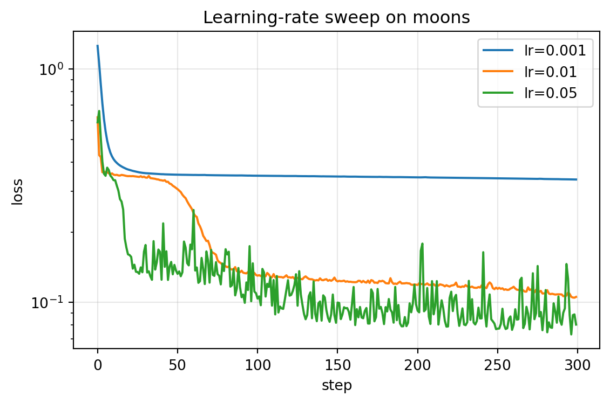
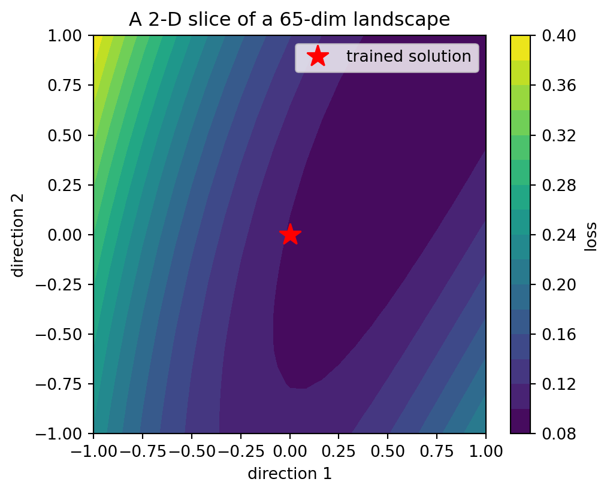

import matplotlib.pyplot as plt
import numpy as np
from dlbook.data import make_moons, make_spiral
from dlbook.nn.mlp_numpy import MLPNumpy
from dlbook.train import Trainer, accuracy
from dlbook.utils import plot_loss_curves, set_seed
set_seed(42)
Xtr, ytr = make_moons(n_per_class=100, seed=0)
Xv, yv = make_moons(n_per_class=100, seed=1)8 训练一个 MLP 到底难在哪
上一部分结束时我们手里有：万能的表示力（1.4 的宽度实验）、能转的发动机（1.3 的反向传播）、以及两道未愈的伤口——深层学不动、训练误差会说谎。本章进入 1990 年代研究者的日常：把一个”理论上什么都能学”的模型，实际训练出来的过程为什么如此碰运气。我们把”难”拆解成四样具体的东西：非凸的地形、碰运气的落点、玄学的步长、随机的初始化——每一样都配一个可以亲手摸到的实验。
Tip算力需求
A 级：笔记本 CPU · 全部实验合计约 1 分钟。
- 算力：工作站进入实验室（10 MIPS 级），训练一个数万参数的网络以小时计；
- 数据：UCI 数据库（1987）统治实验文化——几百到几千样本是常态，“大数据集”这个词还不存在；
- 认知：社区对”为什么训练时灵时不灵”的解释是 folklore 而非理论——“局部极小值”是万能背锅侠；调参被视为手艺而非科学；
- 关键事实：本章讲的四样困难，每一样都要等到 2010 年代才有系统解法（初始化理论、Adam、BatchNorm），而理解它们的工具（loss landscape 的实证研究）要到 2014 年后才成熟。
8.1 本章问题
反向传播给了我们一个下降方向，但没人保证这条路通向哪里。具体拆成四问：
- 地形：loss 的参数空间长什么样？我们是在什么样的山谷里走路？
- 落点：同样的数据、同样的网络、不同的随机初始化，结局差多少？
- 步长：学习率为什么是全篇最玄的超参数？
- 起点：初始化为什么能决定生死？
8.2 历史中的尝试（包括弯路）
“局部极小值”神话（1986–2014）。近三十年的标准解释是：训练卡住 = 掉进了局部极小值。这个直觉来自二维地形图——看起来山谷密布。弯路在于：参数空间的维度是百万级的，而高维空间里几乎不存在”所有方向都向上”的点（一个点要有 \(10^6\) 个方向全部同步向上，概率上近乎不可能）——真正遍布的是鞍点（某些方向向上、某些向下）。这个纠正是 Dauphin 等人在 2014 年才完成的。错怪了局部极小值三十年的代价：很多研究精力花在了”逃离局部极小”的伪问题上。
初始化的 folklore 时代。1990 年代初始化靠口口相传的经验规则（“权重别太大”“对称要打破”），直到 2010 年 Glorot 与 Bengio 才给出扇入缩放的理论分析（Xavier 初始化），2015 年 He 等人补上 ReLU 版本。在此之前，“换个种子就成了”是每天发生的、无法解释的日常。
学习率的黑暗艺术。没有理论告诉你步长该多大；太大发散、太小爬行，而且最优步长随网络结构、数据尺度、批次大小变化。1990s 的论文很少报告学习率如何选定——因为自己也说不清。
你将依次做四个实验（lr 扫描、种子彩票、地形切片、初始化对照）。在运行每一个之前，先在纸上写下你的预测：
- lr 从 0.001 到 0.5 扫过去，loss 曲线会怎么变？（画出来：横轴 lr，纵轴最终 loss）
- 同一配置换 10 个随机种子，最终 loss 的分布会有多散？（猜一个最大/最小比值）
- 一个训练收敛后的模型，把参数朝随机方向推 0.5 的距离，loss 会怎么变？（线性升高？陡壁？还是可能更低？）
- 朴素初始化（大权重）的网络，前向传播时激活值会发生什么？
四张预测都写完再往下运行——本章的价值一半在实验，一半在你的预测与现实的差距里。
8.3 核心思想
非凸 ≠ 迷宫，更像是一片缓慢起伏的高原与偶尔的峡谷。二维直觉在百万维空间失效：局部极小稀少，鞍点遍布，且大多数鞍点至少有一个下降方向可以逃离——这是梯度下降在高维”意外好用”的原因。
训练是一场受初始落点影响的抽样。“深度学习 = 用随机性在参数空间抽签”不是玩笑：同一配置的不同种子可以收敛到损失相差数倍的解。这不是 bug 而是本性——处理它的手段（多次运行取最好、平均权重、早停）贯穿此后二十年。
学习率是最强的超参数：它决定你在这片地形上的移动尺度。太小，任何地形的细节都变成陷阱；太大，连峡谷都直接飞越。后面所有工具（动量、BN、Adam）有一半的隐性贡献都在于让训练对学习率更宽容。
初始化决定起点的水位：朴素大权重让前向激活逐层饱和（tanh 被推进 ±1 的死区）、反向梯度逐层失衡。扇入缩放（除以 \(\sqrt{\text{fan-in}}\)）让每层方差大致守恒——这条规则我们在 1.6 的向量引擎里已经悄悄用了，现在正式验尸。
8.4 从零实现
实验一：学习率扫描。 固定一切，只动步长：
histories = {}
for lr in (0.001, 0.01, 0.05):
m = MLPNumpy(2, [16, 1], seed=42)
histories[f"lr={lr}"] = Trainer(m, lr=lr, momentum=0.9, batch_size=32, seed=0).fit(
Xtr, ytr, 300
)["loss"]
plot_loss_curves(histories, title="Learning-rate sweep on moons");
0.001 爬行（300 epoch 后仍停在 0.34），0.01 到位，0.05 更快。那再大呢？把 lr=0.5 加入扫描——loss 直接溢出为 NaN（数值发散）。注意上一章的教训在这里同样成立：步子太大的死法常常不是爆炸而是饱和，但足够大的步子连饱和区都待不住，干脆溢出。
实验二：种子彩票。 同一配置，只换初始化种子：
finals = []
for seed in range(10):
m = MLPNumpy(2, [16, 1], seed=seed)
h = Trainer(m, lr=0.1, momentum=0.9, batch_size=32, seed=0).fit(Xtr, ytr, 150)
finals.append(h["loss"][-1])
print("10 个种子的最终 train loss:")
print(np.round(finals, 3))
print(f"最好/最差 = {min(finals):.3f} / {max(finals):.3f}（相差 {max(finals)/min(finals):.0f} 倍）")10 个种子的最终 train loss:
[0.048 0.367 0.372 0.367 0.372 0.369 0.368 0.142 0.142 0.143]
最好/最差 = 0.048 / 0.372（相差 8 倍）典型的结果是一张”彩票”：有的种子落到 0.05，有的卡在 0.37——近一个数量级的差距，纯粹来自落点。1990 年代每一个调参的下午都在抽这张签。
实验三：看一眼地形。 训练一个收敛的模型，然后在其参数空间里取两个随机方向张成的平面，扫描 loss：
def flat(model):
return np.concatenate([W.ravel() for W in model.Ws] + [b.ravel() for b in model.bs])
def unflat_like(model_template, wv):
m = MLPNumpy(2, [16, 1], seed=99)
k = 0
for W in m.Ws:
n = W.size
W[...] = wv[k : k + n].reshape(W.shape)
k += n
for b in m.bs:
n = b.size
b[...] = wv[k : k + n].reshape(b.shape)
k += n
return m
m0 = MLPNumpy(2, [16, 1], seed=42)
Trainer(m0, lr=0.05, momentum=0.9, batch_size=32, seed=0).fit(Xtr, ytr, 200)
w0 = flat(m0)
rng = np.random.default_rng(0)
d1 = rng.normal(size=w0.shape); d1 /= np.linalg.norm(d1)
d2 = rng.normal(size=w0.shape); d2 /= np.linalg.norm(d2)
def loss_at(u, v):
m = unflat_like(m0, w0 + 0.5 * u * d1 + 0.5 * v * d2)
return float(np.mean((m.forward(Xtr) - ytr.reshape(-1, 1)) ** 2))
uu = vv = np.linspace(-1, 1, 25)
L = np.array([[loss_at(u, v) for v in vv] for u in uu])
fig, ax = plt.subplots(figsize=(5.5, 4.5))
cs = ax.contourf(uu, vv, L, levels=20, cmap="viridis")
fig.colorbar(cs, label="loss")
ax.plot(0, 0, "r*", ms=14, label="trained solution")
ax.legend()
ax.set_xlabel("direction 1")
ax.set_ylabel("direction 2")
ax.set_title("A 2-D slice through a million-dimension landscape")
plt.show()
这就是 Goodfellow 等人 2015 年让全场吃惊的那张图：收敛点附近不是深井，而是一片缓慢起伏的开阔地——训练终点更像”到达了一片高原的某处”，而非”落进了谷底”。这也解释了种子彩票：不同的落点走到同一片高原的不同位置。
实验四：初始化的生死。 八层 tanh 网络，朴素 vs 扇入缩放初始化。先做确定性体检——数一数每层有多少激活值已经饱和（\(|\tanh| > 0.99\)）：
Xs, ys = make_spiral(n_per_class=200, seed=0)
A = Xs
for init in ("scaled", "uniform"):
m = MLPNumpy(2, [32] * 8 + [1], activation="tanh", seed=0, init=init)
sats, A = [], np.atleast_2d(Xs)
for i in range(m.n_layers - 1):
Z = A @ m.Ws[i].T + m.bs[i]
H = np.tanh(Z)
sats.append(float(np.mean(np.abs(H) > 0.99)))
A = H
print(f"{init:>8} 初始化，各层饱和率: {[round(s, 3) for s in sats]}") scaled 初始化，各层饱和率: [0.0, 0.0, 0.0, 0.0, 0.0, 0.0, 0.0, 0.0]
uniform 初始化，各层饱和率: [0.0, 0.045, 0.139, 0.204, 0.314, 0.354, 0.359, 0.359]朴素初始化下饱和率逐层攀升至三分之一以上——网络还没开始训练，三分之一的梯度通道已经关死；缩放初始化下饱和率为零。训练结局随之分流：
for init in ("scaled", "uniform"):
m = MLPNumpy(2, [32] * 8 + [1], activation="tanh", seed=0, init=init)
h = Trainer(m, lr=0.05, momentum=0.9, batch_size=64, seed=0).fit(Xs, ys, 600)
print(f"init={init:>8}: loss={h['loss'][-1]:.4f} acc={accuracy(m, Xs, ys):.2f}")init= scaled: loss=0.6394 acc=0.78
init= uniform: loss=1.6161 acc=0.50缩放版缓慢爬到 0.78，朴素版彻底躺平在 0.50。为什么除以 \(\sqrt{\text{fan-in}}\) 有此神效？直觉版：一层的前向方差是 \(\text{fan-in} \times \mathrm{Var}(w) \times \mathrm{Var}(a)\)，想让方差逐层守恒，就需要 \(\mathrm{Var}(w) \sim 1/\text{fan-in}\)——这正是 Glorot 与 Bengio 2010 年给出的分析（严格版还要同时照顾反向传播，见练习 5）。
8.5 消融实验
饱和率是中介变量。 上一个实验其实是一条因果链：初始化尺度 → 前向饱和率 → 反向梯度存活 → 训练成败。验证中介环节——把网络改浅（2 层），朴素初始化还致命吗？
for depth in (2, 8):
for init in ("scaled", "uniform"):
m = MLPNumpy(2, [32] * depth + [1], activation="tanh", seed=0, init=init)
h = Trainer(m, lr=0.05, momentum=0.9, batch_size=64, seed=0).fit(Xs, ys, 300)
print(f"depth={depth}, init={init:>8}: acc={accuracy(m, Xs, ys):.2f}")depth=2, init= scaled: acc=0.58
depth=2, init= uniform: acc=0.91
depth=8, init= scaled: acc=0.65
depth=8, init= uniform: acc=0.50浅网上两种初始化差距很小——初始化的破坏力随深度复利增长。这个”深度复利”结构正是下一章的主角：梯度消失不是某层的错，是每一层的小错连乘出来的总账。
8.6 本章 Loss 账本
| 问题 | 回答 |
|---|---|
| 在优化什么 loss？ | 与 1.6 相同的全批/小批 MSE——本章改变的不是目标，而是到达目标的路况 |
| 数据从哪来？ | 双月与螺旋：从玩具走向”需要非线性”的真实难度 |
| 买到了什么能力？ | 对训练动力学的四件实证事实（地形、彩票、步长、起点）与一件理论（扇入缩放） |
| 没买到什么？ | 还没有任何一件能把这些困难系统消除的工具——那是下一章的货架 |
- “局部极小值背锅三十年” → 教训：用二维直觉解释高维现象是深度学习里最持久的思维陷阱（6.3 讨论涌现度量时我们会再犯一次、再纠一次）；
- 扇入缩放初始化 → 今天每个框架的默认初始化（Xavier/He）；LLM 时代初始化仍是深栈的生死线（深度 100+ 的 Transformer 靠它+残差+前层归一化存活）；
- 种子彩票 → “多次运行取最好”是此后二十年的日常；直到 LLM 时代训练一次成本上千万美元，“重抽一张签”变成不可承受——方差本身成了研究对象（loss landscape 与训练稳定性研究）；
- 随机方向切片法 → 今天 interpretability 研究沿参数空间切片考察”解的连通性”（mode connectivity）的祖师爷。
Glorot, X. & Bengio, Y. (2010). Understanding the difficulty of training deep feedforward neural networks. AISTATS.
- 读什么：方差分析那两页——用一条方差守恒论证推出初始化方案，是”理论打捞 folklore”的典范；
- 跳过什么：实验部分的数据集细节；
- 历史注：同一时期的 Dauphin et al. (2014) 用实证推翻”局部极小神话”——两篇论文合起来构成了本章的科学基础，而它们都比 folklore 晚了二十年。顺带读 Sutton 的 The Bitter Lesson（2019）正合适：folklore 的领地正是被”算力+系统方法”逐步攻陷的。
8.7 遗留问题
- 初始化只解决了”起点水位”，深层的梯度在传播中仍然逐层衰减——那个总账（梯度消失）需要一张完整的解剖图（→ 下一章）；
- 我们的引擎里那些”来自未来”的黑魔法（动量、BN）到底各自治什么病？（→ 2.3 工具箱）；
- 学习率的黑暗艺术何时能终结？（部分答案在 2.3 的 BN、以及未来章节的学习率日程）。
8.8 参考文献
- Glorot, Xavier and Bengio, Yoshua (2010). Understanding the Difficulty of Training Deep Feedforward Neural Networks. Proceedings of AISTATS, 9, 249–256. ↗ 搜索原文
- Dauphin et al. (2014). Identifying and Attacking the Saddle Point Problem in High-Dimensional Non-Convex Optimization. NeurIPS. ↗ 搜索原文
- Goodfellow, Ian and Bengio, Yoshua and Courville, Aaron (2016). Deep Learning. MIT Press. ↗ 搜索原文
- Sutton, Richard (2019). The Bitter Lesson. Incomplete Ideas (blog). link. ↗ 搜索原文
8.9 练习
- 造轮子：给
MLPNumpy加一个init="xavier"选项（均匀分布 \(\pm\sqrt{6/(\text{fan-in}+\text{fan-out})}\)），在八层螺旋任务上与"scaled"对照。 - 预测再运行：把种子彩票的批大小从 32 改成全批（200），先猜分布会收紧还是变宽？运行并解释（提示：随机性来源少了一个）。
- 消融：把实验四的激活换成 sigmoid，饱和率与训练结局如何变化？与 1.4 的梯度解剖数据对得上吗？
- 论文映射：用四问账本拆 Glorot & Bengio 2010（注意第三问：它买到的其实不是”能力”而是”可训性”——账本允许这种回答）。
- 进阶：完整推导”前向方差守恒需要 \(\mathrm{Var}(w)=1/\text{fan-in}\)，反向方差守恒需要 \(\mathrm{Var}(w)=1/\text{fan-out}\)“，说明 Xavier 折中取 \(\text{fan-in}+\text{fan-out}\) 的理由。
Note练习答案
练习 2：分布收紧（小批噪声是随机性的放大器），但不会消失——初始化落点仍是抽签。若你观察到某些种子仍然失败，恭喜你看到了”两种随机源”的可分离性。
练习 3：sigmoid 的饱和率用阈值 \(|\sigma-0.5|>0.49\) 度量会更高，八层训练更早躺平；与 1.4 表中 sigmoid 首层梯度 \(2.5\times10^{-1} \to 8.4\times10^{-8}\) 的定量关系是 \(\le 0.25\) 的连乘。
练习 5 提示：反向时梯度经过 \(W^\top\)，每层乘的是 fan-out 方向的权重和——两个约束不能同时严格满足，除非每层方 fan-in=fan-out；Xavier 的调和是让两侧都不爆炸。